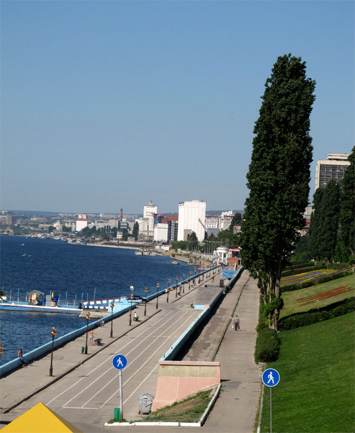
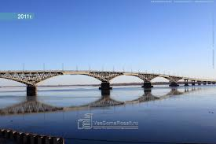
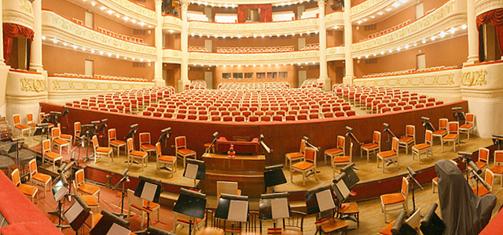
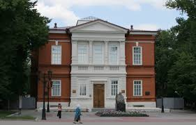
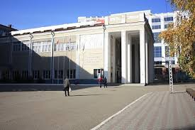
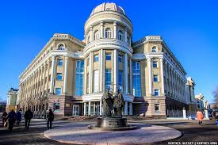
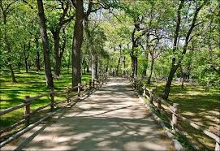
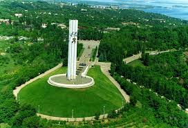
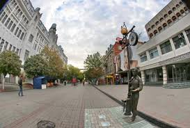
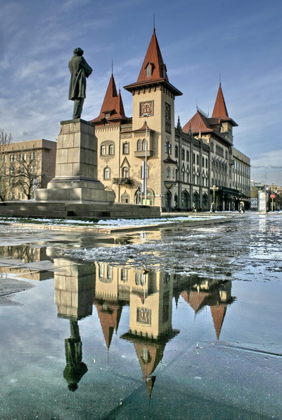

Самые главные и достойные внимания места Саратова
В данном списке представлены самые красивые и важные места в истории Саратова.
Предлагаем вашему вниманию 10 самых популярных для туристов мест в Саратове.Итак,начнем!
Набережная Космонавтов
 Набережная Космонавтов — улица в Саратове, тянущаяся от Бабушкиного взвоза до автодорожного моста через Волгу. Протяжённость — полтора километра.Вопрос о строительстве набережной в Саратове ставился перед городской думой в 1902 году, затем в 1906 году, но средства на обустройство так и не были изысканы. С установлением в городе Советской власти вновь начинает подниматься вопрос о благоустройстве города, о необходимости планировки набережной и высадки зелёных насаждений.Набережная Космонавтов выполнена в 4 яруса от Бабушкиного до Обуховского взвоза, далее остаётся два яруса. Четвёртый ярус набережной граничит с жилой застройкой города. На третьем ярусе создан бульвар с тенистой аллеей. На втором ярусе террасы высажены многолетние цветы. Первый ярус — прогулочная аллея вдоль Волги. В 1962 году набережной было присвоено новое имя — Набережная Космонавтов.
Саратовский мост
 Саратовский мост — автопешеходный мост через Волгу, соединяющий Саратов и город Энгельс. На момент постройки в 1965 году был самым длинным мостом в Европе (его длина — 2803,7 метра).
Театр оперы и балета
 Саратовский академический театр оперы и балета основан в 1875 году. На сцене театра в разные годы пели замечательные мастера русской вокальной школы: Э.Боброва, М.Инсарова, А.Пасхалова, С.Лемешев, народные артисты СССР Г.Ковалева, О.Бардина, Ю.Попов, народные артисты России Г.Станиславова, Н.Довгалева и многие другие.В 1928 году была создана профессиональная балетная труппа театра, в составе которой танцевали известные балерины сестры Урусовы, танцовщики В.Вронский, В.Адашевский, позднее - Л.Борель, В.Дубровина, Г.Альберт. Основное место в репертуаре театра занимают произведения русской оперной и зарубежной классики. Среди последних премьер: «Ромео и Джульетта», «Повесть о настоящем человеке» С.Прокофьева, «Тоска» Дж.Пуччини, «Принцесса цирка» И.Кальмана, «Большой вальс» И.Штрауса, «Волшебная флейта» В.Моцарта; детские спектакли «Морозко» В.Агафонникова, «Конек-Горбунок» Р.Щедрина, «Дюймовочка» С.Баневича.Ежегодно с 1986 года на базе театра проходит Собиновский фестиваль.
Радищевский музей
 Саратовский художественный музей имени А. Н. Радищева — музей в Саратове, один из наиболее значительных художественных музеев в провинции России.Музей был открыт в 1885 году и был первым общедоступным художественным музеем в русской провинции. Основой экспозиции стали дары художника А. П. Боголюбова, внука А. Н. Радищева. В экспозиции музея представлены живопись, скульптура, предметы декоративно-прикладного искусства XIII-XX столетий, как отечественные так и зарубежные. Музей располагает лучшей в стране коллекцией живописи и графики А.П.Боголюбова. Гордостью музея являются произведения живописцев-саратовцев, крупнейших мастеров мирового изобразительного искусства: В.Э.Борисова-Мусатова, П.Н.Кузнецова, К.С.Петрова-Водкина, И. Е. Репина, И. К. Айвазовского, И. И. Шишкина и др.
СГТУ
 Саратовский государственный технический университет имени Гагарина Ю. А. (СГТУ) — один из ведущих технических ВУЗов России. Ранее назывался:
- 1930 — Саратовский автодорожный институт (САДИ)
- 1960 — Саратовский политехнический институт (СПИ)
- 1992 — Саратовский государственный технический университет (СГТУ)
СГУ
 Саратовский государственный университет имени Н. Г. Чернышевского — российское высшее учебное заведение, старейшее высшее учебное заведение города Саратова. Основан в 1909 году.Саратовский государственный университет был основан 10 июня 1909 года, благодаря настойчивости саратовской общественности, администрации и премьер-министра П. А. Столыпина. Университет был открыт как Николаевский университет. Торжественное открытие состоялось 6 декабря с согласия императора Николая II дать университету своё имя. В тот же день после молебна и крестного хода был заложен камень на месте строительства будущих корпусов университета. Для их возведения в качестве архитектора будет привлечен Карл Людвигович Мюфке. За несколько лет ему удастся создать целостный ансамбль с высоким качеством исполнения. Первым ректором Николаевского Саратовского университета стал Василий Иванович Разумовский.
Городской парк
 Городской парк культуры и отдыха им. Максима Горького (сокращённо Городской парк) — главный и один из самых больших парков Саратова.Сейчас, по сравнению с прошлыми годами, парк сильно преображается, сделаны декоративные заборы, высаживается газон и цветы. Городской парк выгодно отличается от других парков Саратова. Здесь обитают белки и водоплавающие птицы (лебеди, гуси, утки), в специальном вольере живёт медведица по кличке Мася. Для очищения прудов в них были запущены крупные амуры, которые достигают длины 1 м. На территории парка расположен городок аттракционов «Лукоморье». По всей территории размещены деревянные скульптуры животных и сказочных персонажей. В дальнейшем будут также размещены растительные скульптуры.
Парк Победы
 Мемориальный комплекс Парк Победы открыт в 1975 году. 9 мая 1999 года в парке Победы была торжественно открыта уникальная экспозиция военной техники и техники тыла, представленной более чем 130 экспонатами. В их числе самые известные образцы советской и российской военной техники, такие как машины залповой артиллерии БМ-8, БМ-13, БМ-31 («Катюша»), большое число танков — в том числе Т-34, артиллерийские орудия и т. д., и крупный парк авиационной техники.
Проспект Кирова
 Проспект Кирова (до 1917 Немецкая улица) — центральная улица Саратова. Проходит от улицы Радищева до улица Чапаева. В XIX веке его называли "Невским проспектом" Саратова. С момента закрытия движения транспорта и организации пешеходной зоны по всей протяженности улицы получила народное название "Саратовский Арбат".
Консерватория им.Л.В.Собинова
 Саратовская государственная консерватория имени Л. В. Собинова — высшее музыкальное учебное заведение, один из старейших в России музыкальных вузов, основана в 1912 году. Это первое в российской провинции высшее музыкальное учебное заведение, открытое вслед за Cанкт-Петербургской и Московской консерваториями. Первоначальное название - Саратовская Императорского Русского музыкального общества Алексеевская консерватория (в честь наследника престола).